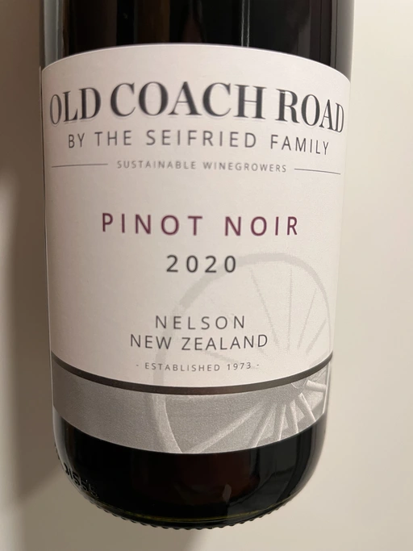

- Type
- Red Still, Dry
- Producer
- Seifried Family
- Vintage
- 2020
- Location
- New Zealand, Nelson
- Grapes
- Pinot Noir
- Alcohol
- 14
- Sugar
- NA
- Price
- 545 UAH
- Cellar
- N/A
Ratings
2022-12-03 - 5.50
Oh my god. This is not tasty at all. A flabby mix of wet earth, flowers, herbs and raspberry. It’s crispy and light with a herbaceous finish. Don’t forget to chill it.